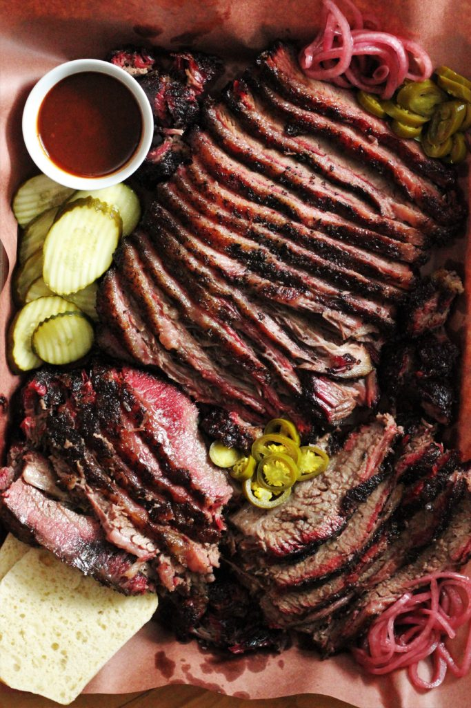

Texas Style Smoked Brisket

Being from Texas I had to share a Texas-Style smoked brisket! Here is a brisket recipe from heygrillhey. Heygrillhey follows the easy Texas brisket recipe of salt, pepper, and a little bit of time (like 12+ hrs).
Tools/Ingredients
- Smoker.
- Large Cutting Board.
- Meat Thermometer.
- Butcher Paper.
- Chef's Knife.
Instructions
- SELECT YOUR BRISKET. Plan on purchasing a whole packer brisket with both the point and flat muscle included. The grade of your meat matters, prime beef will have more fat marbling. (This means more flavor and juiciness than a choice graded brisket!). Buy about 1/2 pound (or more) of brisket per person you are serving.
- TRIM THE BRISKET. Some Texans claim they don't trim at all. At most of the top smokehouses, however, they do trim. This step is so important for how the final product will turn out. Spend the 20-30 minutes you need to trim it properly.
- SEASON YOUR BRISKET. Texas style is seasoned with only coarse salt and coarse black pepper. You can add garlic powder for an extra little layer of goodness.
- GET SMOKING! The goal here, whatever type of smoker you are using, is consistent heat and a steady flow of thin blue smoke.
- WRAP THE BRISKET. This is one of the most crucial steps. The brisket gets wrapped up like a present with either foil or butcher paper, folding edge over edge until it is fully sealed. Return the brisket to your smoker with the folded edges down and continue smoking at 225 degrees F until the internal temperature of your brisket reaches 202 degrees F at the thickest part (make sure your thermometer is in the meat, not fat).
- SLICE YOUR BRISKET. You want to slice your smoked brisket against the grain for maximum tenderness. But remember! There are two overlapping muscles and two different grain directions. You can split the point and flat sections and slice each individually against the grain before serving but that sometimes leaves pieces with no bark on top. Traditional Texas joints split the brisket down the middle, as close as possible where to point overlaps the flat, they then turn the point 90 degrees and slice it that way and then finish slicing the flat the opposite way. You will have some pieces where they grain isn't perfect but if your meat is tender enough it won't matter too much.
- SERVE YOUR GORGEOUSLY SMOKED BRISKET. For an even more traditional experience, serve on a platter with butcher paper, lots of pickles, white bread, picked red onions, and pickled jalapenos. Sauce on the side. Always.
More Tips For The Best Smoked Brisket
- Mix your spices in advance.Mix your salt, pepper, and garlic in an old spice shaker container. Shake the spices out at about 2 feet above your brisket while seasoning. This will create a nice even layer of salt, pepper, and garlic across the entire surface of your brisket.
- Either side up cooks just fine!Many people argue whether you should cook your brisket with the fat side up or down when smoking. Guess what? I did two briskets, one up and one down. There was no difference in final product. Place it on there however you prefer!
- Don’t forget to rest! Resting your brisket is extremely important. I recommend resting your brisket for at least one hour. You can just leave it in the butcher paper and set it on a cutting board or baking sheet. If you need to rest your brisket for more than an hour, that is no problem! Simply wrap it in a towel (one you don’t mind sacrificing for tasty brisket) and set it in an insulated cooler. I’ve held briskets this way for up to 6 hours and they come out hot and perfect every time!
Home